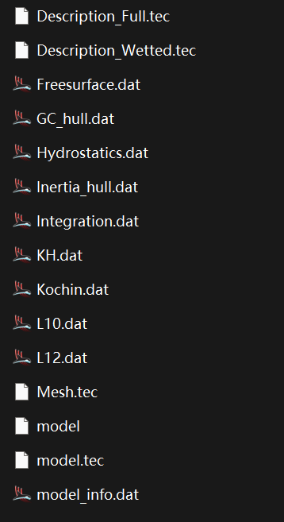
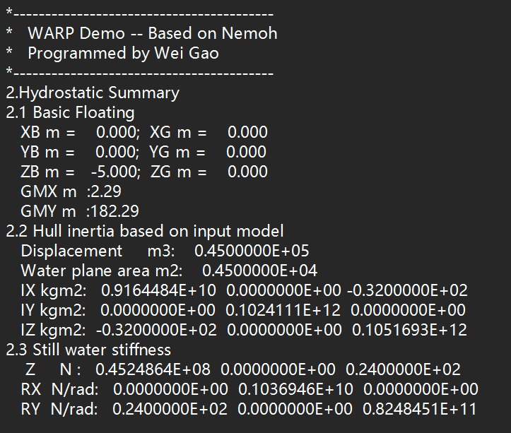

Run Mesh
The mesh program is primarily used for model checking and hydrostatic calculations.
In WARP:
1. Place the model file in the root directory of the project folder.
2. Configure calculation parameters:
- Water depth
- Waterplane position
- Center of gravity position
- Waterline position (recommended: 0)
- Water density
- Gravitational acceleration
After setting parameters, click Run. The program will:
- Write input parameters to mesh.cal
- Generate a batch file
- Execute the batch file to run the mesh program.
Once completed, the mesh program saves results in the mesh subdirectory.

Click Summary in the interface to generate:
- Hydrostatic calculation summary files
- Model metadata files
in the project root directory.
